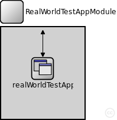
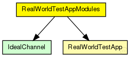
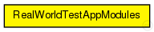

This documentation is released under the Creative Commons license
This documentation is released under the Creative Commons licenseCompound module for a simple real world test application
Author: Bernhard Heep
The following diagram shows usage relationships between types. Unresolved types are missing from the diagram. Click here to see the full picture.
The following diagram shows inheritance relationships for this type. Unresolved types are missing from the diagram. Click here to see the full picture.
| Name | Direction | Size | Description |
|---|---|---|---|
| udpIn | input |
gate from the UDP layer |
|
| from_lowerTier | input |
gate from the lower tier |
|
| from_upperTier | input |
gate from the upper tier |
|
| trace_in | input |
gate for trace file commands |
|
| udpOut | output |
gate to the UDP layer |
|
| to_lowerTier | output |
gate to the lower tier |
|
| to_upperTier | output |
gate to the upper tier |
| Name | Type | Default value | Description |
|---|---|---|---|
| realWorldTestApp.debugOutput | bool |
enable debug output |
// // Compound module for a simple real world test application // // @author Bernhard Heep // module RealWorldTestAppModules { gates: input udpIn; // gate from the UDP layer input from_lowerTier; // gate from the lower tier input from_upperTier; // gate from the upper tier input trace_in; // gate for trace file commands output udpOut; // gate to the UDP layer output to_lowerTier; // gate to the lower tier output to_upperTier; // gate to the upper tier submodules: realWorldTestApp: RealWorldTestApp; connections allowunconnected: from_lowerTier --> realWorldTestApp.from_lowerTier; to_lowerTier <-- realWorldTestApp.to_lowerTier; from_upperTier --> realWorldTestApp.from_upperTier; to_upperTier <-- realWorldTestApp.to_upperTier; trace_in --> realWorldTestApp.trace_in; }
This documentation is released under the Creative Commons license